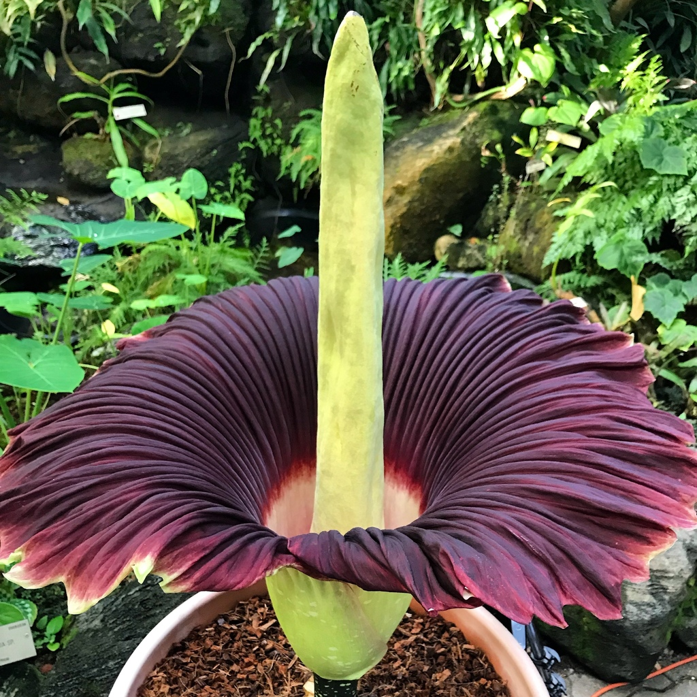

| La flor cadáver es la inflorescencia no ramificada más grande del mundo, pudiendo alcanzar alturas de 2.7 a 3 metros. Desprende un fuerte olor nauseabundo, similar al de carne podrida, para atraer a los insectos polinizadores. La floración es un evento raro y dura solo uno o dos días, con una frecuencia de cada pocos años (a veces incluso una vez por década). La espata, una estructura tipo pétalo que rodea el espádice central, es verde por fuera y rojo intenso por dentro, resaltando su aspecto llamativo. |
 |
| La flor cadáver se encuentra exclusivamente en la isla de Sumatra, en Indonesia, y no se encuentra en ningún otro lugar del mundo de forma natural. Su hábitat ideal son las selvas tropicales con sombra, alta humedad y temperaturas cálidas, lo que permite el desarrollo de su gran tamaño y la compleja floración. |
- Germinación y desarrollo temprano: El ciclo comienza con la germinación de una semilla y el desarrollo de un tubérculo subterráneo.
- Fase vegetativa: La planta produce una hoja grande cada año, mientras el tubérculo almacena energía.
- Floración: La floración es un evento raro, con una duración de 24 a 48 horas, acompañada de un fuerte olor a carne en descomposición.
- Polinización y reproducción: Si la polinización tiene éxito, la planta produce frutos rojos llenos de semillas. Si no, el tubérculo entra en reposo, acumulando energía para el próximo ciclo.
- Regreso a la latencia: Después de la floración, la planta vuelve a un período de reposo hasta que el tubérculo acumula suficiente energía para un nuevo ciclo.
|